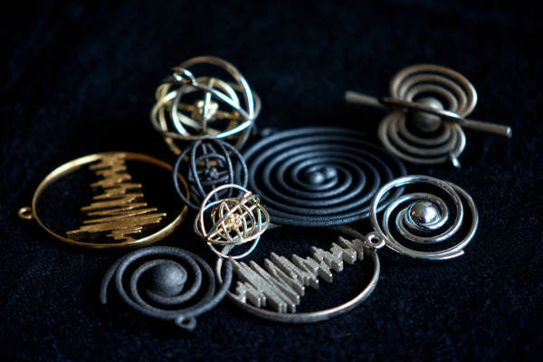

Deep Sky Objects
Astronomically inspired objects 3D-printed in metal, some incorporating real data. See more at my Shapeways shop.

Sonification
Sounds from science using the music coding software Sonic Pi. Hear examples at my Soundcloud page.

Milwaukee Urban Observatory
Our latest project involves using astronomical imaging and analysis techniques to study the spatial and temporal variation of urban light. In collaboration with David Kaplan of the UWM Physics department, members of the UWM Center for Urban Studies, and the Urban Observatory at NYU.